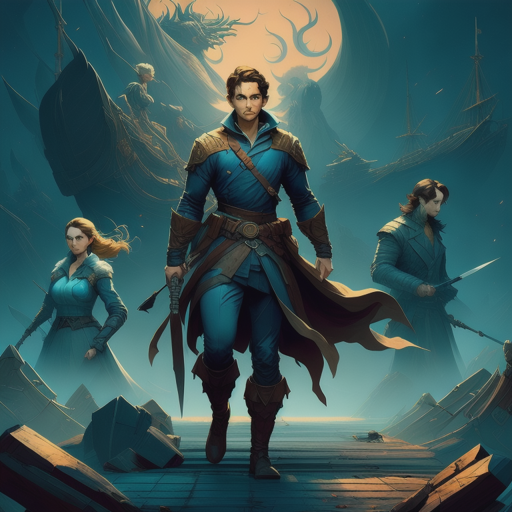

The final showdown between Sara, Jack, Sophie, and the rival faction was an epic clash of ideals and power.
As the battle reached its climax, the artifacts' power surged, and the world teetered on the brink of chaos.
But in that critical moment, Sara and Jack made a selfless choice. They used the artifacts' power to heal the world, mend its wounds, and bring about a new era of harmony
The rival faction's sinister plans were thwarted, and they were brought to justice.
With the artifacts' power harnessed for the greater good, the world was forever changed.
Sara, Jack, and Sophie, as the guardians of this power, were celebrated as heroes who had saved the world from destruction.
Their friendship, which had rekindled on a phone call, had now become an unbreakable bond forged through trials and triumphs.
The Reconnection